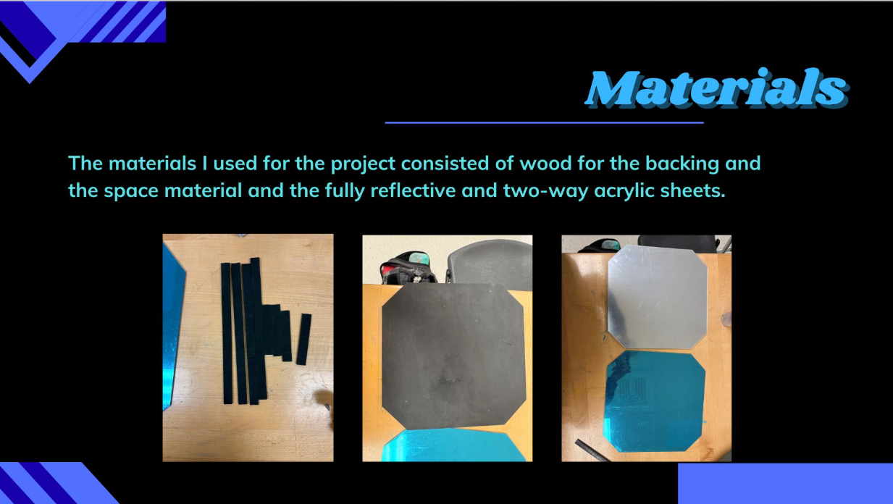
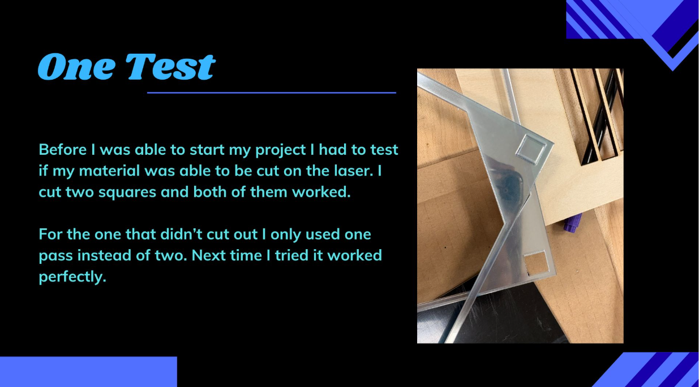
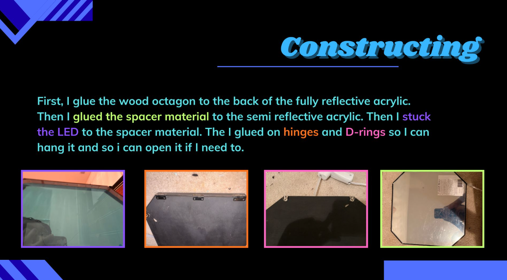
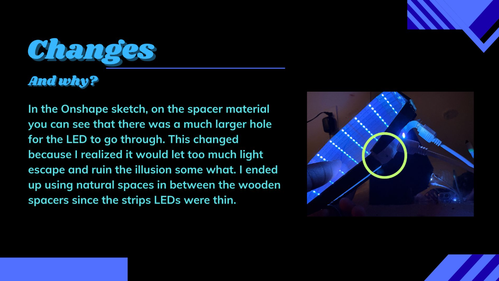

Infinity Mirror
Gantt Chart

Project & Purpose
I made a hexagonal infinity mirror for the sake of decor and cool photo.

Brainstorming & Final Idea
From the begining I knew I wanted to make an infinity mirror but I was looking for frame inspo. I eventually landed on a garden mirror & I used AI to generate the photo.


AI Usage

Sketches


Materials & Construction
The materials consisted of wood, one way acrylic mirror, two way acrylic mirror, d-rings, hinges. Before I cut the acrylic I did a test in one corner to make sure it wouldn't catch fire in the laser. After that I was able to start constructing



What Worked & Changes


Final Product

Back to 10th grade projects